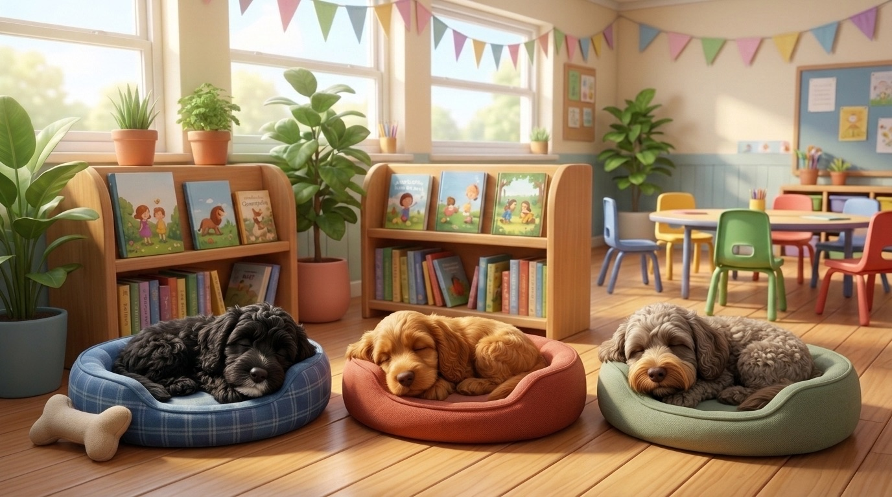
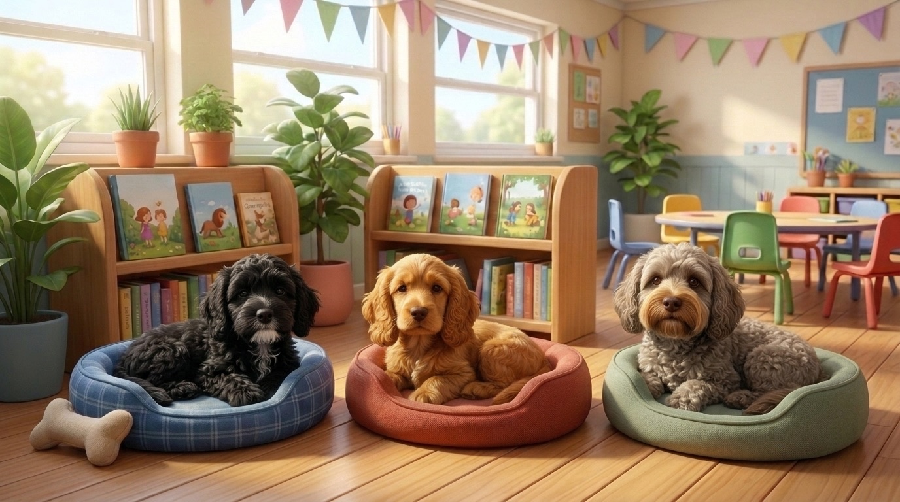
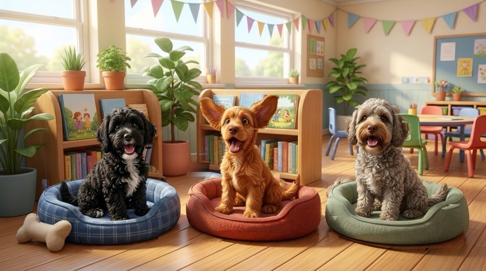

🚨🐶
Uh oh! Too Noisy!
You woke up the dogs — let's whisper so they can sleep again!
🐾 Who Is Napping in Class Today?
Tap to choose which school dog(s) are visiting today:
🔒 Audio is measured live in your browser and is never recorded or sent anywhere.